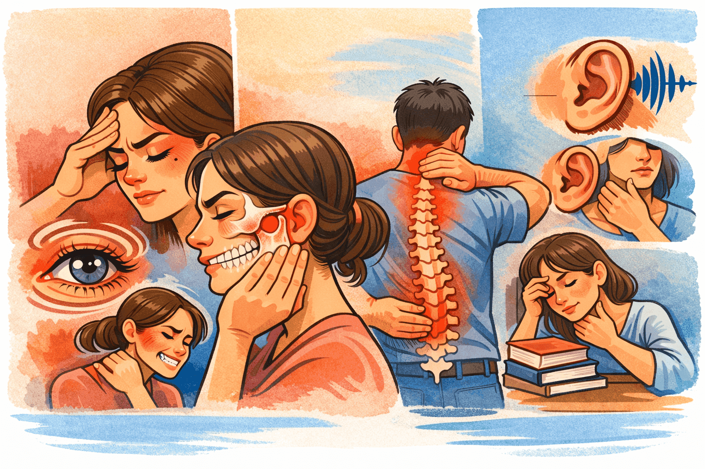
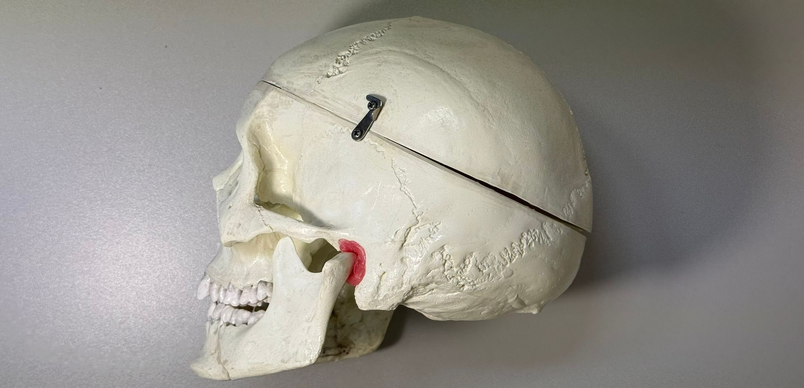
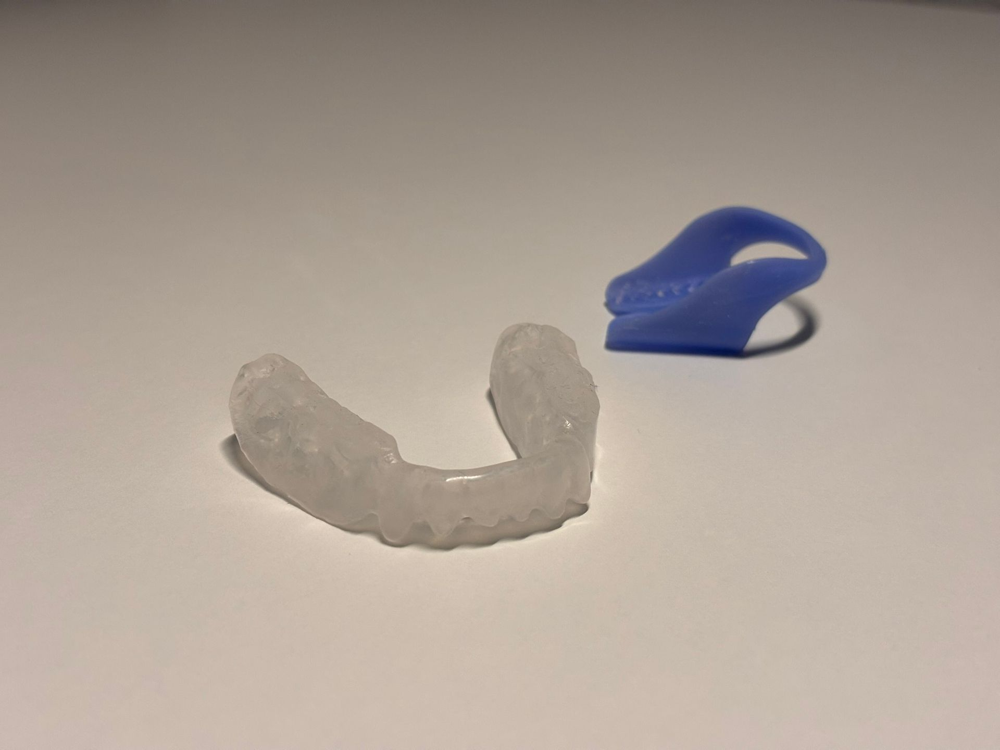

Was ist CMD?
CMD steht für Craniomandibuläre Dysfunktion und beschreibt eine Fehlfunktion im komplexen System aus Kiefergelenken, Kaumuskulatur und Zähnen. Der Begriff setzt sich zusammen aus "Cranium" (Schädel) und "Mandibula" (Unterkiefer) – das Kiefergelenk verbindet diese beiden Strukturen und ist eines der am häufigsten benutzten Gelenke unseres Körpers.
Schätzungen zufolge leiden etwa 5-10% der Bevölkerung unter behandlungsbedürftigen CMD-Beschwerden. Das Tückische: Die Symptome werden oft nicht mit dem Kiefergelenk in Verbindung gebracht, sodass Betroffene jahrelang von Arzt zu Arzt gehen, ohne die wahre Ursache zu finden. In unserer Praxis haben wir uns seit der Gründung 1996 auf die Diagnostik und Therapie von CMD spezialisiert.
Schnellnavigation
Häufige Symptome einer CMD

CMD kann sich durch eine Vielzahl von Symptomen äußern, die auf den ersten Blick nicht immer mit dem Kiefergelenk in Verbindung gebracht werden:
- Kopf- und Gesichtsbereich: Kopfschmerzen, Migräne, Gesichtsschmerzen, Schmerzen im Bereich der Schläfen, Druckgefühl hinter den Augen, Schwindelgefühl
- Kiefergelenk und Kaumuskulatur: Kiefergelenkschmerzen, Knacken oder Reiben im Kiefergelenk, eingeschränkte Mundöffnung, Muskelschmerzen im Gesicht, Zähneknirschen (Bruxismus)
- Nacken und Rücken: Verspannungen der Nacken- und Schultermuskulatur, Rückenschmerzen, Beschwerden der Halswirbelsäule, Haltungsprobleme
- Weitere Symptome: Ohrgeräusche (Tinnitus), Hörstörungen, Schluckbeschwerden, Schlafstörungen, Konzentrationsprobleme
Wenn Sie sich in mehreren dieser Symptome wiedererkennen, könnte eine CMD die gemeinsame Ursache sein.
Ursachen von CMD

CMD hat selten nur eine einzelne Ursache – meist ist es ein Zusammenspiel verschiedener Faktoren, die sich gegenseitig verstärken:
- Stress und psychische Belastungen: Der häufigste Auslöser. Stress führt zu unbewusstem Zähneknirschen und -pressen (Bruxismus), oft nachts. Die Kaukraft kann dabei bis zu 480 kg betragen – zehnmal mehr als beim normalen Kauen.
- Fehlbiss (Okklusionsstörung): Wenn Ober- und Unterkiefer nicht harmonisch aufeinandertreffen, werden Kiefergelenke und Muskulatur ungleichmäßig belastet.
- Zahnverlust oder fehlerhafte Versorgungen: Veränderte Bisshöhe durch fehlende Zähne, zu hohe Füllungen oder Kronen kann das gesamte System aus dem Gleichgewicht bringen.
- Haltungsprobleme und Wirbelsäulenfehlstellungen: Die Körperstatik beeinflusst die Kieferposition – und umgekehrt. Ein Beckenschiefstand kann zu CMD führen.
- Unfälle und Traumata: Schleudertrauma, Stürze auf das Kinn oder direkte Schläge können die Kiefergelenke schädigen.
- Parafunktionen: Gewohnheiten wie Nägelkauen, Kauen auf Stiften oder einseitiges Kauen belasten das System zusätzlich.
Leiden Sie unter Kieferbeschwerden?
Vereinbaren Sie einen Termin zur CMD-Diagnostik – je früher die Ursache erkannt wird, desto besser die Behandlungsergebnisse.
Di: 8-12 & 13-17
Mi: 8-12 & 13-16
Fr: Termine n.V.
Funktionsanalyse & Diagnostik
Am Anfang jeder CMD-Therapie steht eine ausführliche Diagnostik. Nur wenn wir die genauen Ursachen Ihrer Beschwerden verstehen, können wir einen wirksamen, individuellen Therapieplan erstellen.
- Ausführliche Anamnese und klinische Untersuchung
- Manuelle Funktionsanalyse und Palpation der Kaumuskulatur
- Analyse der Unterkieferbewegungsbahnen
- Auskultation von Kiefergelenkgeräuschen (Knacken, Reiben)
- Bei Bedarf: 3D-Bildgebung (DVT) für detaillierte Kiefergelenkdarstellung
Die Funktionsanalyse bildet die Grundlage für alle weiteren Therapieschritte und wird sorgfältig dokumentiert.
Schienentherapie

Die Aufbissschiene (Okklusionsschiene) ist das wichtigste Therapiemittel bei CMD. Sie wird individuell nach den Ergebnissen der Funktionsanalyse gefertigt und sorgt dafür, dass Kiefergelenke und Kaumuskulatur in eine entspannte, physiologische Position geführt werden.
- Individuell gefertigte Aufbissschienen nach präziser Funktionsanalyse
- Verschiedene Schienentypen je nach Diagnose und Beschwerdebild
- Schutz der Zähne vor Abrieb durch nächtliches Knirschen und Pressen
- Entspannung der Kaumuskulatur und Entlastung der Kiefergelenke
- Regelmäßige Kontrolle und feinjustierte Anpassung der Schiene
Die meisten Patienten berichten bereits nach wenigen Wochen Schienentherapie von einer deutlichen Besserung ihrer Beschwerden.
Ganzheitliche Therapie
Die erfolgreiche Behandlung von CMD erfordert einen ganzheitlichen Ansatz. Neben der Schienentherapie setzen wir auf manuelle Therapie und eine enge interdisziplinäre Zusammenarbeit, um Ihre Beschwerden nachhaltig zu lindern.
Kieferrelease & manuelle Therapie:
- Sofortige Schmerzlinderung bei akuten Kieferbeschwerden
- Lösung von Triggerpunkten und Verspannungen in der Kaumuskulatur
- Mobilisation des Kiefergelenks bei eingeschränkter Mundöffnung
- Anleitung zu Selbstübungen und Entspannungstechniken für zu Hause
Interdisziplinäre Zusammenarbeit:
- Physiotherapeuten (manuelle Therapie, Osteopathie)
- Orthopäden (Wirbelsäule, Körperstatik)
- HNO-Ärzte (Ohrgeräusche, Schwindel)
- Neurologen (Kopfschmerzen, Migräne)
- Psychologen (Stressmanagement, Bewältigungsstrategien)
Die CMD-Therapie ist ein Prozess, der Geduld erfordert. Wir begleiten Sie mit regelmäßigen Kontrollterminen auf dem Weg zur Beschwerdefreiheit.